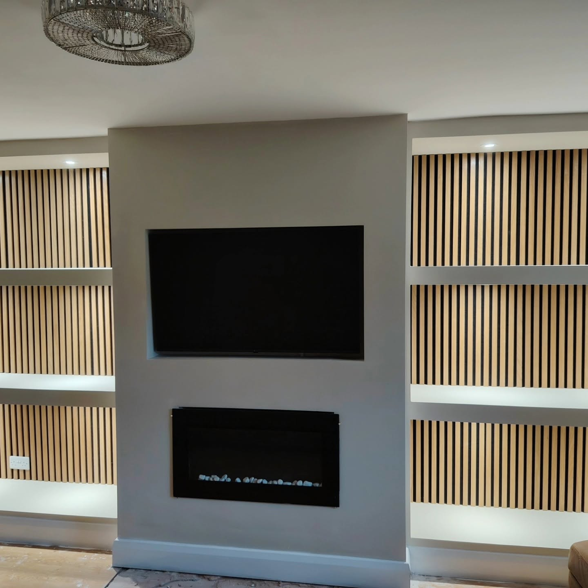
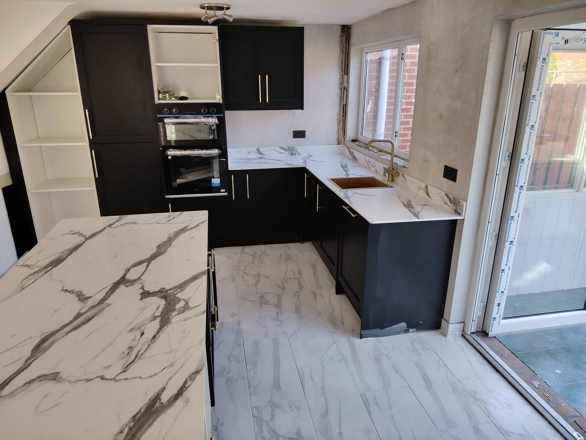
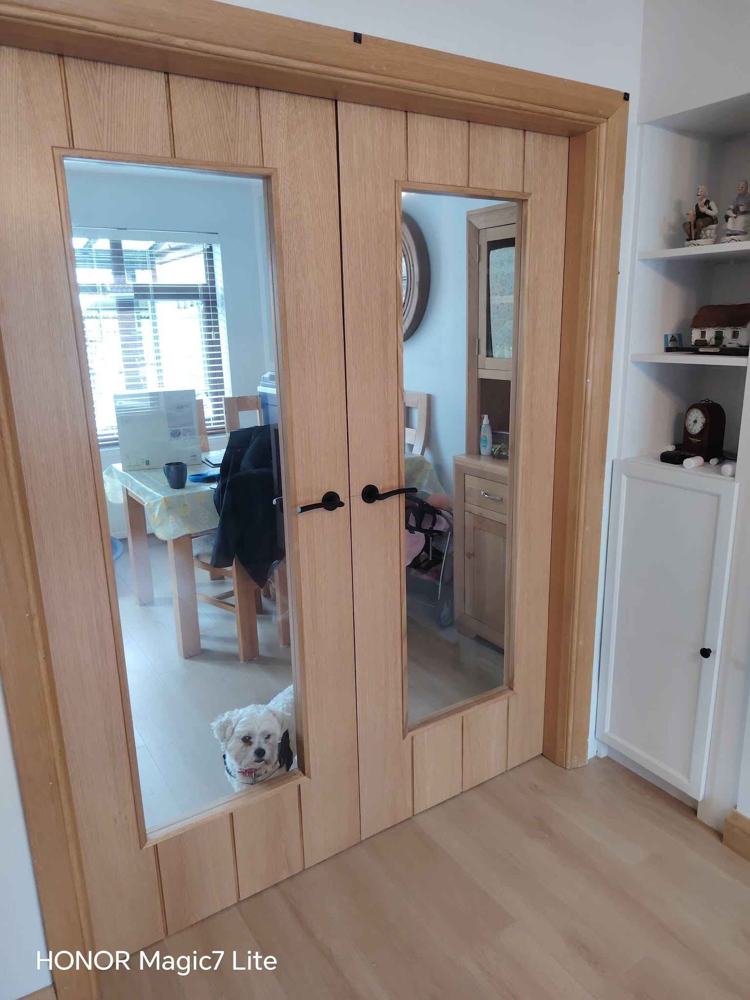
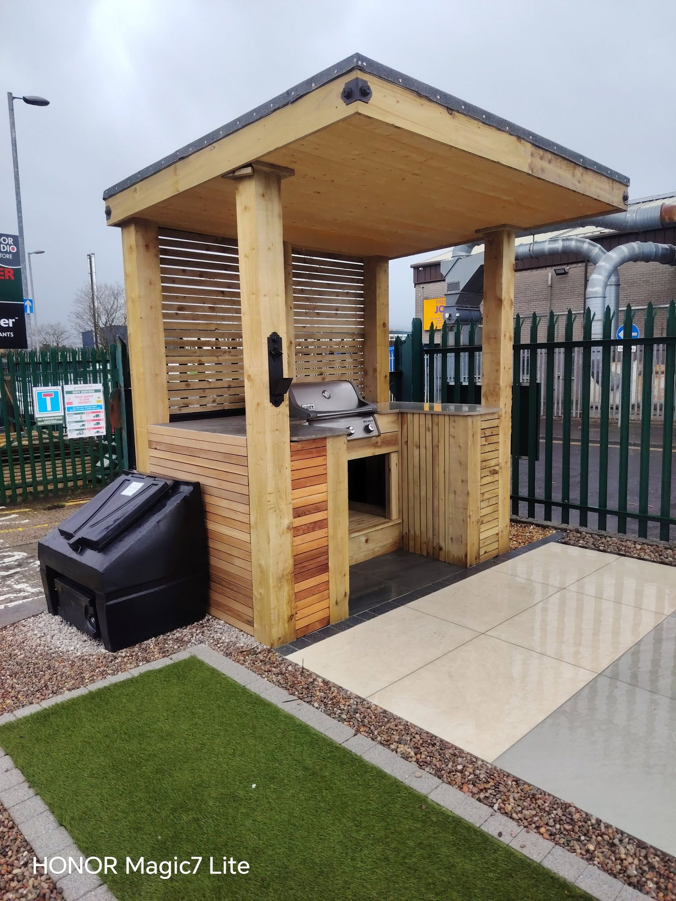
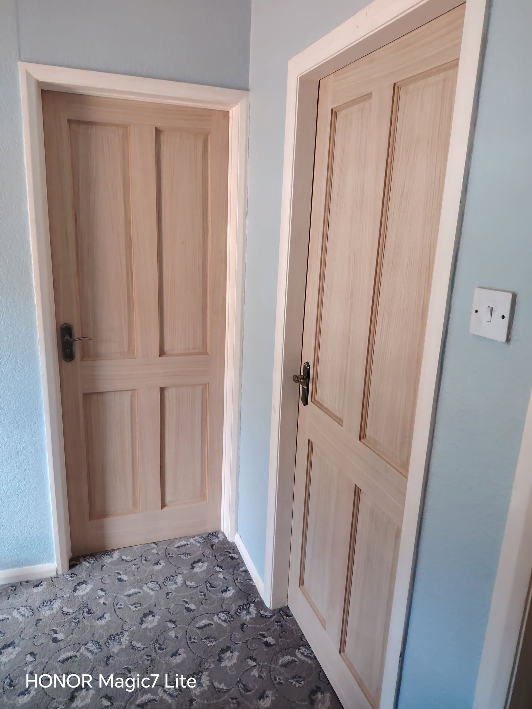
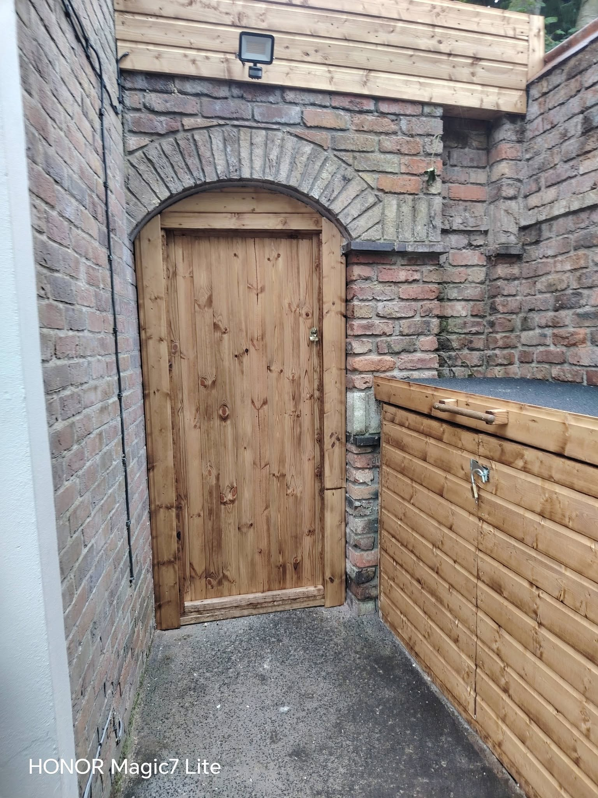
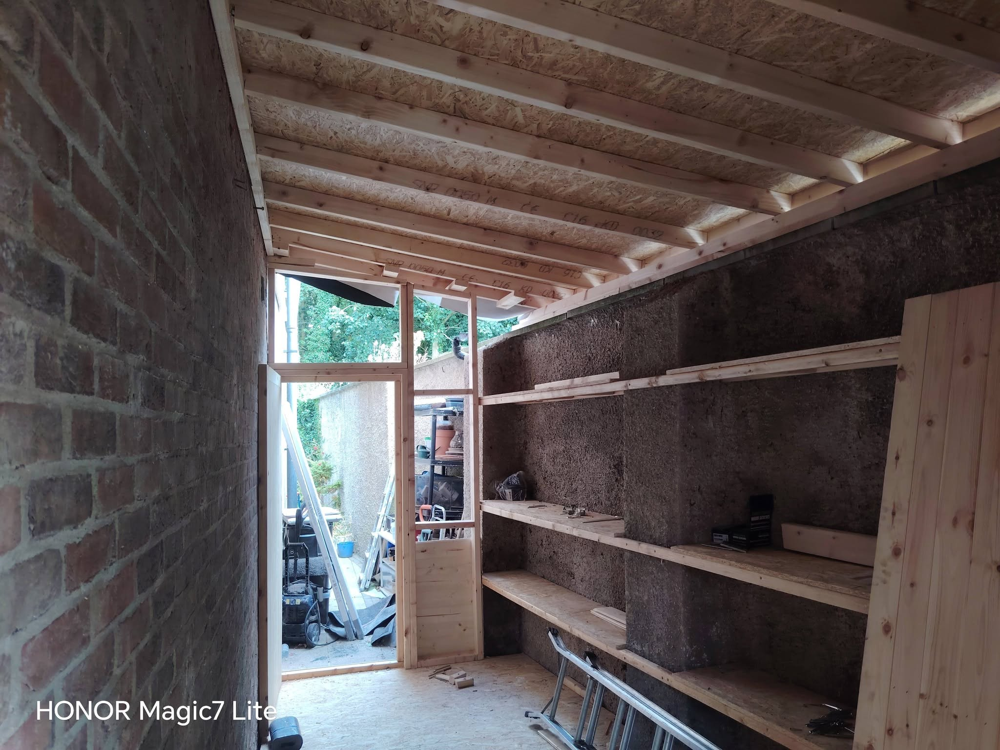
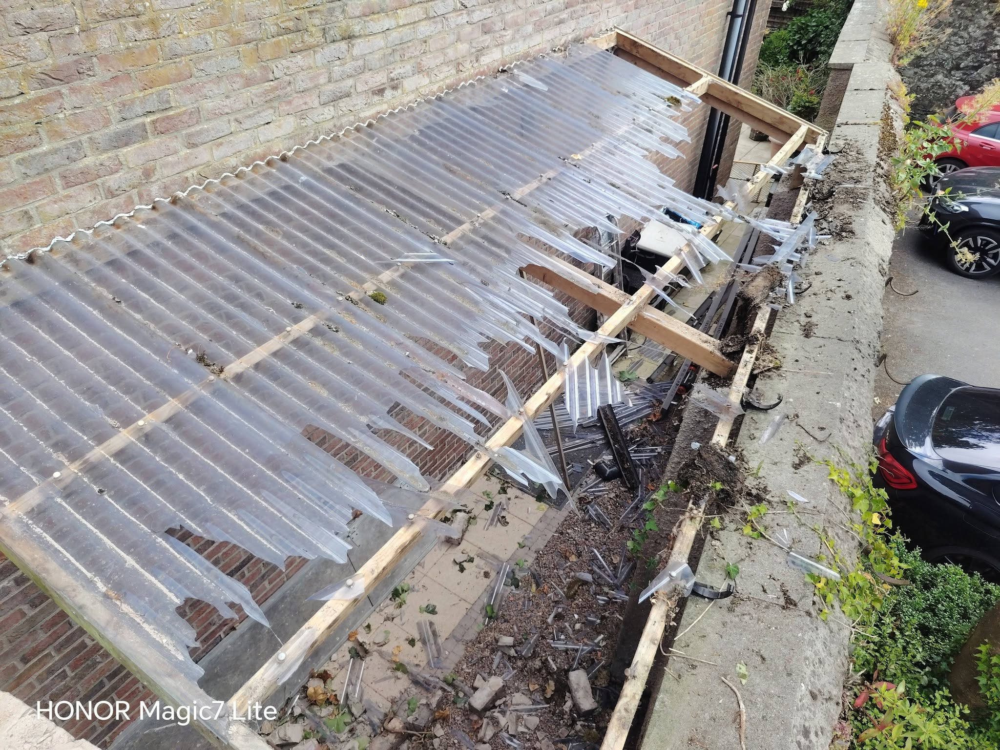

01
Kitchen fitting
Cabinet installation, worktops, finishing details and complete kitchen fit-outs.
Precision kitchens, interior carpentry and practical home improvements with clean detailing, solid workmanship and a finish that feels considered.
From full kitchen installs to doors, feature walls, fencing and one-off bespoke timber jobs, B-Carpentry covers the work that makes a home feel finished.
Cabinet installation, worktops, finishing details and complete kitchen fit-outs.
Doors, frames, trims, panelling and custom timber details throughout the home.
Feature walls, media walls, storage solutions, timber structures and tailored projects.
Fencing, gates, timber structures and practical exterior carpentry.

Custom joinery, recessed lighting, timber acoustic panels and a neatly integrated TV/fireplace wall turn a plain room into a proper focal point.
A mix of kitchens, doors, timber work and home improvements completed by B-Carpentry.





Not every job fits neatly into one category. The all-trades approach means the practical surrounding work can be handled too.

Built to suit awkward spaces, practical use and the way the property actually works.

Useful all-trades support for the repair and improvement jobs around the home.
Send over what you need doing and a few photos if you have them. From there, the job can be discussed properly and quoted.
Call or WhatsApp with the job, measurements or a few clear photos.
Agree the scope, materials and what needs to be done before work starts.
Careful workmanship, tidy detailing and a result built to look right and last.
Send over a few photos and we can take it from there.